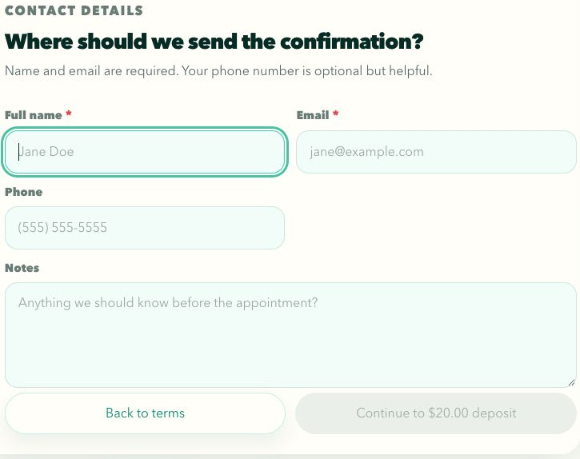
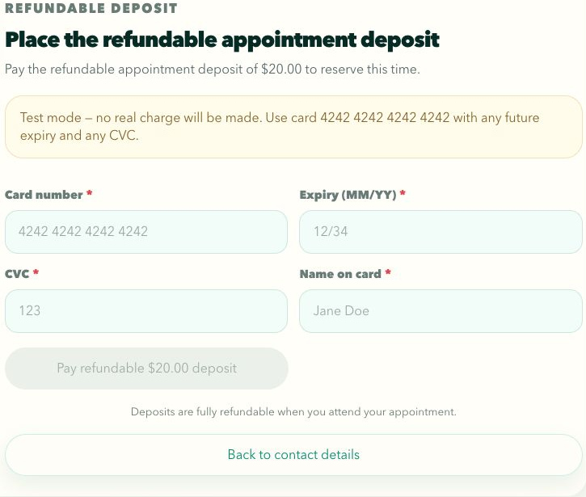
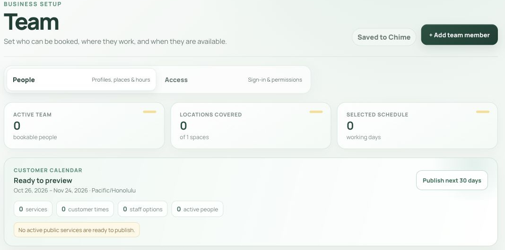

Book an appointment and manage its next step in Chime
Follow the customer booking route, then use the separate Studio sections when working for the business. The customer example uses invented data in the actual Chime components. Staff guidance combines an authenticated workspace viewed without changes, inspected source and clearly identified earlier portfolio examples.
26 October 2026
Which route do I need?
Customers choose a service and time. Authorized business staff use Studio to manage the records and rules behind that booking.
Start as a customer
Use the booking link supplied by the business. Chime is available at bookwithchime.com, and businesses can place its widget on their own sites. The three main steps are Service, Calendar and Reserve. Reserve contains Terms, Contact, Deposit and Done. A deposit is conditional on the service. An open time is an offered choice; the final submission still needs the booking service to accept it.
Follow the fictional example
The screenshots use Example Service Studio, an invented business. Jordan Reed chooses a 30 minute Consultation on Tuesday, October 27, 2026 at 9:00 AM, with a $20.00 refundable sample deposit. The bundled sample does not publish a full service price. Dates and openings belong to this demonstration; use the business's current choices for a real appointment.
Use Studio only for your business
The staff sections require an authorized account and the correct workspace. Current screenshots show the authenticated Freelance workspace with an empty schedule. Earlier populated Sea & Kin Studio images are separate examples, not records created by Jordan's fictional flow. Read the caption for each. This review viewed the workspace without adding appointments, changing setup, sending messages or moving money.
How do I choose the right service?
Read the service before selecting a time. Its duration and deposit shape the rest of the request.
Compare the available choices
Select a service card, then read its description and duration. In the local example, Consultation lasts 30 minutes; Repair Session lasts 60 and Installation lasts 90. These are bundled demonstration services. A live business controls its own descriptions, prices, deposits and offerings.
Distinguish price from deposit
A deposit is an amount required under the business's booking policy. It is not automatically the complete service price. When a service supplies a published price, Chime can show Price separately from Refundable deposit. When no total price is published, do not infer one from the deposit. The illustrated Consultation shows a $20.00 deposit and no full price.
Continue with the selected service
For the example, select Consultation and Continue to calendar. If the service is wrong, change it before completing the request. A new service can have different available times, duration and payment requirements.

How do I find an available date and time?
Choose a date, then a specific opening. Continue remains unavailable until both are selected.
Find a day with openings
Use the month controls or Next opening. On a narrow screen, the month button and Back to times switch between the month grid and available times. The previous and next day controls move among days with openings. Read the displayed appointment date and time rather than assuming a particular time zone from this guide.
Choose an offered time
The illustrated October calendar shows 13 openings on Tuesday, October 27. Jordan selects 9:00 AM. The 10:00 AM option is marked Booked and cannot be selected; 11:00 AM carries a Popular label. Popular is a display cue, not a promise that the time will remain available. In another visit, current dates and opening counts may differ.
Check the selected summary
Read the service, date and selected time before Continue to terms. The example summary reads Tue, Oct 27 at 9:00 AM. Change service returns to the earlier choice. The inspected backend rechecks current capacity and service rules at submission, so choosing an opening does not bypass a later conflict.


What do I review before entering contact details?
Read the appointment summary and the complete terms supplied by the business.
Read the displayed document
The Terms screen keeps the service, appointment and refundable deposit beside the document. Scroll inside the terms document to its bottom, rather than scrolling only the page. The checkbox remains disabled until that reading gate is satisfied. If all the text already fits, the component recognizes that without requiring a scroll.
Make the appropriate decision
In a real booking, select I have read and agree to the terms and conditions only if you agree. Then choose Continue to contact details. Back to calendar lets you revisit the time. The illustrated local fixture instead uses clearly fictional demonstration information, so exercising its checkbox does not accept a real business agreement.
Keep the amount tied to the service
The amount on the summary comes from the selected service. Read the business's actual cancellation and deposit policy rather than treating the fictional sample or a general product description as that policy. Terms, contact details and payment are separate stages.


Which contact details are required?
Enter the details the business needs to identify the appointment and contact you.
Complete the required fields
The default form requires Full name and Email. Phone and Notes are optional. The business can configure customer fields, so follow the required markers on the actual form. Invalid or missing required values keep Continue unavailable and receive a field level explanation.
Keep the example fictional
The demonstration uses Jordan Reed and jordan.reed@example.com, with Fictional documentation example. in Notes and Phone left blank. These are invented details. Read the address before continuing. In a real request, an incorrect address can prevent the intended customer from receiving later communication.
Follow the conditional next step
A service with a required positive deposit continues to that amount's deposit screen. The sample uses Continue to $20.00 deposit. A no deposit service can instead show Confirm appointment. Back to terms returns to the previous stage. Completing contact fields alone does not establish a saved booking or a sent message.



How should I read the deposit step?
Use the amount, mode and business policy shown on this screen. A sample deposit is not a universal Chime fee.
Recognize the local test mode
The documentation fixture displays Test mode and states that no real charge will be made. It uses the actual simulated card form, without a Stripe payment endpoint. The example enters 4242 4242 4242 4242, expiry 12/34, CVC 123 and Jordan Reed. These are test values for the fictional demonstration. Do not enter real card details in this example.
Keep a real authorization distinct from collection
In the inspected connected payment route, a new deposit can be authorized for later capture. Authorization, collection, release and refund are separate states. The business's configuration and provider response determine what actually happened. A button caption or a local simulated success is not proof that money moved.
Continue once
Check the amount, then use Pay refundable $20.00 deposit in this example. A required payment step without configuration reports a problem rather than silently saving an unpaid booking. Back to contact details returns to the earlier information. A final booking result follows the deposit stage; it is not interchangeable with payment success.



How do I know which part succeeded?
Read the final message and reference, and keep booking, payment and communication states separate.
Read the result
The component shows a Confirmed badge and Appointment request received, then says a confirmation has been prepared for jordan.reed@example.com. Those words do not establish email delivery. The example also states: Local documentation demonstration completed. No booking was saved, no payment was made and no email was sent. Its details match the 30 minute Consultation on October 27 at 9:00 AM and the $20.00 sample deposit. A server supplied reference appears when present; this local flow creates no server booking.
Recover without starting a second payment
If a payment identifier exists but the booking could not be saved, the interface can show Payment received — finishing your booking and Retry booking. That route retains the identifier while trying the booking save again. Read the actual error or ask the business for help if it persists. Do not interpret a payment result as proof that the appointment was saved.
Add a personal calendar entry if useful
The result offers Google Calendar, Apple / iCal (.ics), Outlook.com, Office 365 and Yahoo. These actions add a personal reminder; they do not create or approve a business appointment. Book another appointment starts a new customer flow rather than changing the completed one.

Where does authorized staff work begin?
Sign in with an authorized business account and confirm the workspace before changing records.
Use the relevant area
Appointments contains Schedule and Requests. Business setup contains Services, Team and Availability. Customers contains customer records and Messages. Money opens the financial workspaces; the current deposit page is headed Deposits. Booking widget contains Widget designer and Launch. Settings is separate. Choose the area for the record you need rather than starting a second customer booking.
Distinguish an empty workspace from a missing session
An empty schedule can be a genuine signed in workspace. The observed Freelance schedule for October 26 to 30 had no appointments and no active team. Its existing draft Consultation was set to one hour, $0 and no deposit, with no published service. That is separate from Jordan's fictional 30 minute, $20 example. A missing or expired session requires sign in; a local customer demo does not grant Studio access.
Read the operation before committing
Creating, moving, publishing, sending or returning money can affect customers. Read the relevant preview and its actual change, recipient and result before committing. The guide explains the implemented routes, but the authenticated observation stayed with viewing screens and forms. The earlier populated illustrations demonstrate separate example data.

How do I record an appointment agreed outside the widget?
Use Add an appointment from Schedule when the business already arranged the booking with the customer.
Complete the appointment fields
Choose Service, Team member and Starts, then check Minutes. The service supplies its default length, which remains editable. Choose Location when applicable, enter Customer name and add optional Phone, Email and Note for your team. A matching contact can link an existing customer instead of creating another record.
Review before adding
Select Review and add. The preview identifies the service, customer, team member and time, and explains that the time will stop being offered on the booking page. Review that proposed result before Add appointment. The current manual route explicitly does not email or text the customer because this appointment was already agreed outside the widget.
Find the saved result
After a successful save, the schedule loads the week in which the appointment lands. If a field or service rule prevents saving, resolve the reported issue rather than assuming the record exists. A filled form or preview is not the saved appointment.

What happens when I move or resize an appointment?
This section explains the reviewed implementation and earlier populated example. The live empty workspace did not expose an appointment change to exercise; follow the actual preview in the edition you use.
Describe the actual change
Select an appointment and adjust time, duration, team member or location. Read any overlap warning, including service buffers. Explain Why is this changing? in customer appropriate language. The preview compares the old and new values and names the recipient. An unchanged appointment produces no new request.
Read the preview's decision
In the inspected revision, the form can say Send change for approval, followed by a more specific preview: Move it now or Ask the customer to approve. Automatic and business modes can apply immediately. That revision sends staff related modes to customer approval because its staff channel is unfinished. This limit is specific to the inspected source, not a claim about the deployed backend. Current live templates include newer team and coverage messages, but their presence alone does not establish an approval route.
Keep pending work visible
A pending customer request keeps the original appointment active. Waiting for customer shows the proposed values and reason, with Withdraw request available before a decision. The proposed replacement time is not a guaranteed reservation. Current rules and conflicts are checked again when the customer responds. A request sent and a change applied are different results.

How do I handle a request that needs a person?
The reviewed implementation separates requests needing a decision from confirmed appointments. No pending request was exercised in the empty live workspace.
Read the current state
A service can confirm automatically or keep a request pending. In the reviewed implementation, the request preview offers Approve and notify or Decline and reopen, with the intended recipient and effect. Those names describe the inspected route, not an observed live decision. Read the actual current request and preview before acting.
Separate cancellation from money movement
Cancel appointment is a distinct consequential action. Its result and any related communication do not establish that a deposit was automatically returned. Inspect the payment record and applicable business policy separately. Preserve the action history instead of repeating a cancellation or message because a different screen still needs attention.
Which service settings control the customer flow?
Business setup, then Services, defines the offered appointment and its rules.
Set the offering and payment
Use Service name, Category, Short description and Default length. Service price is distinct from Deposit. Deposit choices include No deposit, Fixed amount, Percentage and Full payment, with the relevant amount or percentage field. Assign supported team members and locations. Confirm automatically and Review each request govern initial booking confirmation, not every later schedule change.
Set the timing and capacity
The advanced service controls include Shortest, Longest, Resize steps, Buffer before, Buffer after, Schedule changes, Minimum notice, Book ahead and Capacity per start time. Active service and customer widget visibility are separate controls. Read their scope before changing what customers can choose.
Save the actual rule
Select Save service and read the save result. A preview or unsaved field is not the server's current rule. The customer submission rechecks current service requirements, so a changed deposit or booking window may require the customer to revisit a stale request.

How do staff hours become customer openings?
A saved team profile and a published customer calendar are related but separate results.
Maintain the team record
In Team, add or select a member. Check Full name, Role or specialty, contact details, assigned services and locations, working days and hours. Add time off records From and Through dates and an optional note. Save team member stores the profile. Opening the new member form can create an unsaved local profile; that alone does not save an active team member.
Read the calendar publication state
The customer calendar panel shows the publication date range and time zone, plus services, customer times, staff options and active people. The observed empty workspace showed Pacific/Honolulu and October 26 through November 24, with no active public services ready to publish. Save profiles before publishing appears when profile edits remain unsaved. On a configured workspace, distinguish saving those profiles from publishing customer openings.
Keep existing work connected
The inspected data model accounts for Studio appointments, customer bookings and buffers when maintaining availability. The review did not apply migrations or inspect production configuration. If expected openings are missing, inspect the relevant service, active member, location, hours and publication state rather than creating an unrelated duplicate offering.



How do I change appearance and publish the right booking route?
Widget designer controls presentation. Launch controls how customers reach the business.
Save the design
The current live Widget designer groups its controls under Your brand, Customer welcome, Color and finish and Saved design. Wide, Inline and Phone switch preview formats. Save design is unavailable while the design is already Saved. Design preview code is a preview connection, not proof that a customer channel has been installed or published.
Continue to Launch for website setup
Open Launch after reviewing the design. The current screen separates Hosted booking link from Add Chime to a website. The hosted link has Publish the hosted booking link, Open and Copy link. Website modes are On the page, Pop-up and Floating button, with Website preview and trusted website choices. These are separate routes to the business, not evidence that both are published.
Publish deliberately
Read readiness and the Website widget state before Save changes. In the observed workspace, readiness was 33%, or two of six essentials. Business is open and Deposit payouts were complete because no deposits were required. Public service, Team coverage, Bookable times and Widget design remained incomplete. The website widget was paused, Not published yet, with zero connected websites and Finish setup to publish disabled. A general Live badge does not override that channel state.


What can I establish from the Deposits workspace?
Open the financial area under Money. The current page is headed Deposits; read its records before interpreting a payment outcome.
Find the relevant record
The current workspace has Deposits, Deposit rules and Connection subnavigation. Deposits offers All deposits, Needs action and Refunds views, plus search and Refresh. The observed workspace showed zero deposits and Your first deposit will appear here. An empty list does not demonstrate a collection, release or refund.
Distinguish the financial states
An authorization is a hold, collection captures money, release ends an uncaptured hold, and refund returns previously collected money. A refund request is not proof the customer's bank has posted the credit. Those concepts apply when reading a populated ledger, but no row action was available or exercised in the empty live workspace.
Use populated examples as reference
The reviewed implementation and earlier portfolio example include state dependent collection, release, refund and provider sync actions, with permission and version checks. They are reference evidence, not proof of identical current labels. In that implementation, new connected account payments retain their originating account; historical records without one use the platform branch. Read the actual record, available control and business policy before a financial action.

What does the message status establish?
Messages has Activity, Templates and Sending setup. Each answers a different question about customer communication.
Find the message and its history
Activity provides Search messages, channel choices, Refresh and Needs attention, Upcoming, Recent, Stopped and All filters. Select a message to read its content and delivery history. The observed workspace showed Live email and zero messages. That establishes the displayed mode and empty activity, not an email delivered during this review.
Inspect content without sending
Templates lists Published templates. The selected email shows Published email with sample details, plus Wide, Narrow and Plain text previews. Viewing that sample sends nothing. Edit email starts a content change. Send preview email is a real send to the configured preview recipient, so it differs from inspecting the on screen preview. No edit or preview email was sent during this observation.
Read the sending state separately
Sending setup shows the sending identity, reply destination and status. The observed workspace reported Live email, Sending service Set up and Automatic sending Running, but Last message accepted was None recorded. The screen explicitly states that acceptance does not confirm delivery to the inbox. Replies go to the displayed mailbox and do not appear inside Chime. Refresh status updates this view; it is not the Send preview email action.


What should I do when the normal route stops?
Match the symptom to the affected record and keep completed actions intact.
An opening or deposit changed
A live booking can reject stale capacity, notice, advance window or deposit details. Read the conflict and revisit the current offering rather than assuming the earlier screen reserved it. If payment was already identified, follow the retained payment retry route instead of starting an independent payment.
A staff edit conflicts
Studio can report a newer record version or an overlap. Reload the current record and compare the intended change. Buffers can explain a conflict even when the visible appointment blocks do not touch. Do not infer a completed update from a local drag preview.
A session or provider is unavailable
An expired Studio session returns to sign in. A missing payment configuration, unavailable launch setting or delivery failure has its own state. Resolve the stated setup or permission issue. The product's source checks do not establish complete recovery from every provider or concurrent edit failure.
| State | Meaning |
|---|---|
| Selected opening | A current choice, before final submission |
| Request received | Read the returned booking status and reference |
| Change pending | Original remains active while a decision is needed |
| Authorized deposit | A hold, distinct from collection |
| Queued message | Prepared work, not inbox delivery |
| Saved design | Stored presentation, distinct from publication |
Which evidence does this edition use?
Documentation review date: October 26, 2026. The public website, private source inspection and local synthetic demonstration are different evidence.
Know the illustration sources
Customer screenshots were captured on October 26, 2026 from unchanged application components with a fictional local configuration. Current Studio screenshots show the authenticated Freelance workspace viewed without saved changes. Earlier populated Sea & Kin Studio images are historical examples with separate people, services and amounts. Where current labels differ, the instructions use the observed live labels. Source inspection supports the underlying implementation discussion; the inspected revision was not matched to the deployment.
Keep claims proportionate
Targeted regression scripts were inspected but not run during this writing review. No production appointment, message, payment or deployment was changed. The guide does not claim user testing, accessibility conformance or measured business improvement. Report a mismatch with the screen, action and edition so related explanations can be corrected together.